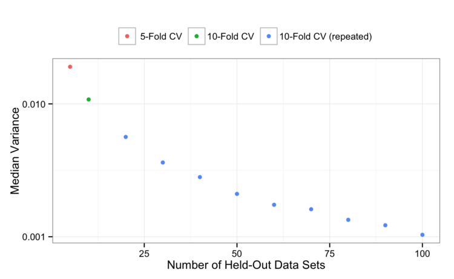
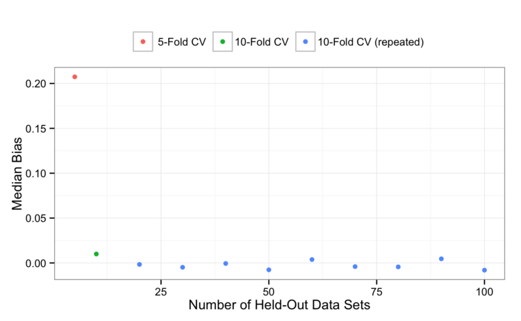
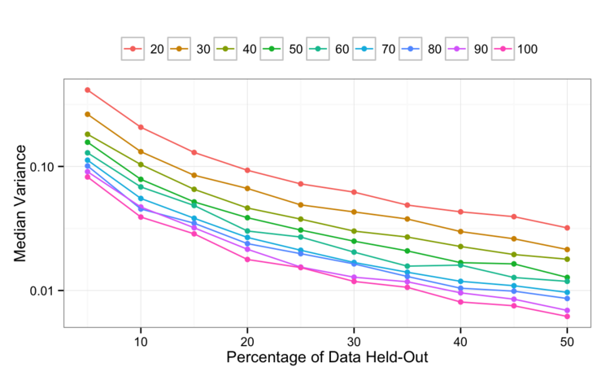
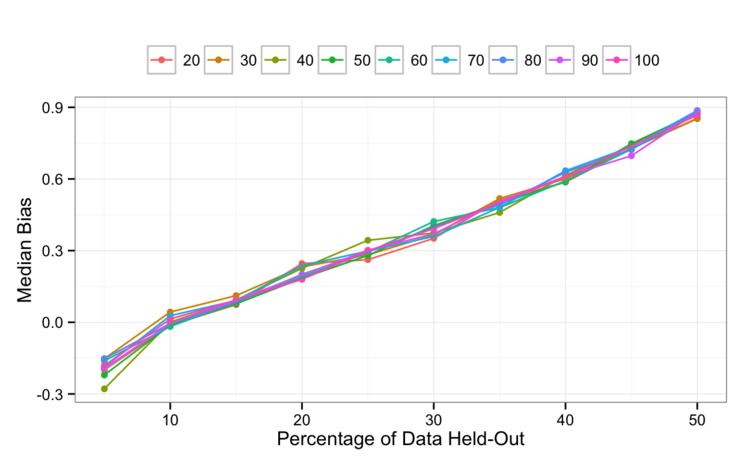
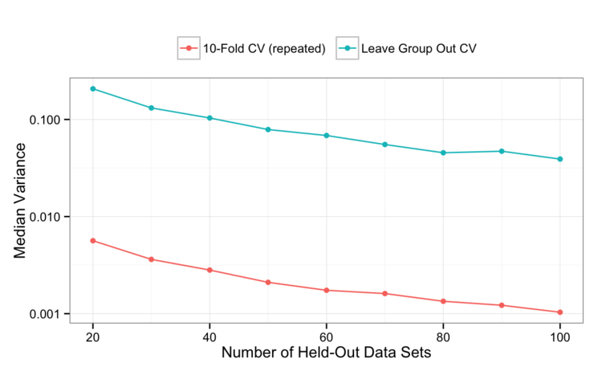
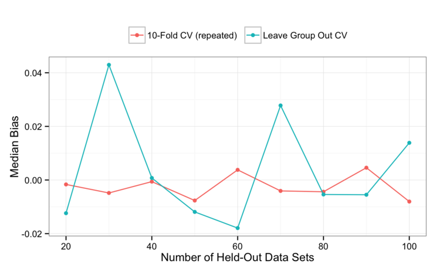

Comparing Different Species of Cross-Validation
This is the first of two posts about the performance characteristics of resampling methods. I just had major shoulder surgery, but I’ve pre-seeded a few blog posts. More will come as I get better at one-handed typing.
First, a review:
- Resampling methods, such as cross-validation (CV) and the bootstrap, can be used with predictive models to get estimates of model performance using the training set.
- These estimates can be made to tune the model or to get a good sense of how the model works without touching the test set.
There are quite a few methods for resampling. Here is a short summary (more in Chapter 4 of the book):
- k-fold cross-validation randomly divides the data into k blocks of roughly equal size. Each of the blocks is left out in turn and the other k-1 blocks are used to train the model. The held out block is predicted and these predictions are summarized into some type of performance measure (e.g. accuracy, root mean squared error (RMSE), etc.). The k estimates of performance are averaged to get the overall resampled estimate. k is 10 or sometimes 5. Why? I have no idea. When k is equal to the sample size, this procedure is known as Leave-One-Out CV. I generally don’t use it and won’t consider it here.
- Repeated k-fold CV does the same as above but more than once. For example, five repeats of 10-fold CV would give 50 total resamples that are averaged. Note this is not the same as 50-fold CV.
- Leave Group Out cross-validation (LGOCV), aka Monte Carlo CV, randomly leaves out some set percentage of the data B times. It is similar to min-training and hold-out splits but only uses the training set.
- The bootstrap takes a random sample with replacement from the training set B times. Since the sampling is with replacement, there is a very strong likelihood that some training set samples will be represented more than once. As a consequence of this, some training set data points will not be contained in the bootstrap sample. The model is trained on the bootstrap sample and those data points not in that sample are predicted as hold-outs.
Which one should you use? It depends on the data set size and a few other factors. We statisticians tend to think about the operating characteristics of these procedures. For example, each of the methods above can be characterized in terms of their bias and precision.
Suppose that you have a regression problem and you are interested in measuring RMSE. Imagine that, for your data, there is some “true” RMSE value that a particular model could achieve. The bias is the difference between what the resampling procedure estimates your RMSE to be for that model and the true RMSE. Basically, you can think of it as accuracy of estimation. The precision measures how variable the result is. Some types of resampling have higher bias than others and the same is true for precision.
Imagine that the true RMSE is the target we are trying to hit and suppose that we have four different types of resampling. This graphic is typically used when we discuss accuracy versus precision.
 Clearly we want to be in the lower right.
Clearly we want to be in the lower right.
Generally speaking, the bias of a resampling procedure is thought to be related to how much data is held out. If you hold-out 50% of your data using 2-fold CV, the thinking is that your final RMSE estimate will be more biased than one that held out 10%. On the other hand, the conventional wisdom is that holding less data out decreases precision since each hold-out sample has less data to get a stable estimate of performance (i.e. RMSE).
I ran some simulations to evaluate the precision and bias of these methods. I simulated some regression data (so that I know the real answers and compute the true estimate of RMSE). The model that I used was random forest with 1000 trees in the forest and the default value of the tuning parameter. I simulated 100 different data sets with 500 training set instances. For each data set, I also used each of the resampling methods listed above 25 times using different random number seeds. In the end, we can compute the precision and average bias of each of these resampling methods.
I won’t show the distributions of the precision and bias values across the simulations but use the median of these values. The median represents the distributions well and are simpler to visualize.
Question 1a and 1b: How do the variance and bias change in basic CV? Also, Is it worth repeating CV?
First, let’s look at how the precision changes over the amount of data held-out and the training set size. We use the variance of the resampling estimates to measure precision.
First, a value of 5 on the x-axis is 5-fold CV and 10 is 10-fold CV. Values greater than 10 are repeated 10-fold (i.e. a 60 is six repeats of 10-fold CV). For on the left-hand side of the graph (i.e. 5-fold CV), the median variance is 0.019. This measures how variable 5-fold CV is across all the simulated data sets.
 There probably isn’t any surprise here: if your measure additional replicates, the measured variance goes down. At some point the variance will level off but we are still gaining precision by repeating 10-fold CV more than once. Looking at the first two data points on the (single 5-fold and 10-fold CV), the reduction in variance is probably due to how much is being left out (10% versus 80%) as well as the number of resamples (5 versus 10).
What about bias? The conventional wisdom is that the bias should be better for the 10-fold CV replicates since less is being left out in those cases. Here are the results:

From this, 5-fold CV is pessimistically biased and that bias is reduced by moving to 10-fold CV. Perhaps it is within the noise, but it would also appear that repeating 10-fold CV a few times can also marginally reduce the bias.
Question 2a and 2b: How does the amount held back affect LGOCV? Is it better than basic CV?
Looking at the leave-group-out CV results, the variance analysis shows an interesting pattern:

Visually at least, it appears that the amount held-out has a slightly a bigger influence on the variance of the results than the number of times that the process is repeated. Leaving more out buys you better individual resampled RMSE values (i.e. more precision).
That’s one side of the coin. What about the bias?
 From this, LGOCV is overly pessimistic as you increase the amount held out. This could be because, with less data used to training the model, the less substrate random forest has to create an accurate model. It is hard to say why the bias didn’t flatten out towards zero when small amounts of data are left out.
Also, the number of held-out data sets doesn’t appear to reduce the bias.
One these results alone, if you use LGOCV try to leave a small amount out (say 10%) and do a lot of replicates to control the variance. But… why not just do repeated 10-fold CV?
We have simulations where both LGOCV and 10-fold CV left out 10%. We can do a head-to-head comparison of these results to see which procedure seems to work better. Recall that the main difference between these two procedures is that repeated 10-fold CV splits the hold-out data points evenly within a fold. LGOCV just randomly selects samples each time. In ease case, the same training set sample will show up in more than one of the hold-out data sets so the difference is more about configuration of samples.
Here are the variance curves:

That seems pretty definitive: all other things being equal, you gain about a log unit of precision using repeated 10-fold CV instead of LGOCV with a 10% hold-out.
The bias curves show a fair amount of noise (keeping in mind the scale of this graph compared to the other bias images above):

I would say that there is no real difference in bias and expected this prior to seeing the results. We are always leaving 10% behind and, if this is what drives bias, the two procedures should be about the same.
So my overall conclusion, so far, is that repeated 10-fold CV is the best in terms of variance and bias. As always, caveats apply. For example, if you have a ton of data, the precision and bias of 10- or even 5-fold CV may be acceptable. Your mileage may vary.
The next post will look at:
- the variance and bias of the nominal bootstrap estimate
- a comparison of repeated 10-fold CV to the bootstrap
- the out-of-bag estimate of RMSE from the individual random forest model and how it compares to the other procedures.
EDIT: based on the comments, here is one of the simulation files. I broke them up to run in parallel on our grid but they are all the same (except the seeds). Here is the markdown file for the post if you want the plot code or are interested to see how I summarized the results.